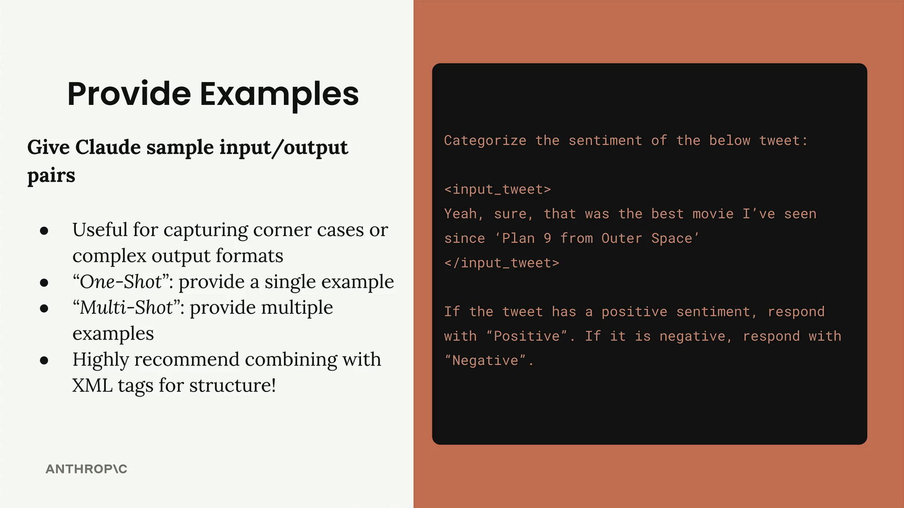
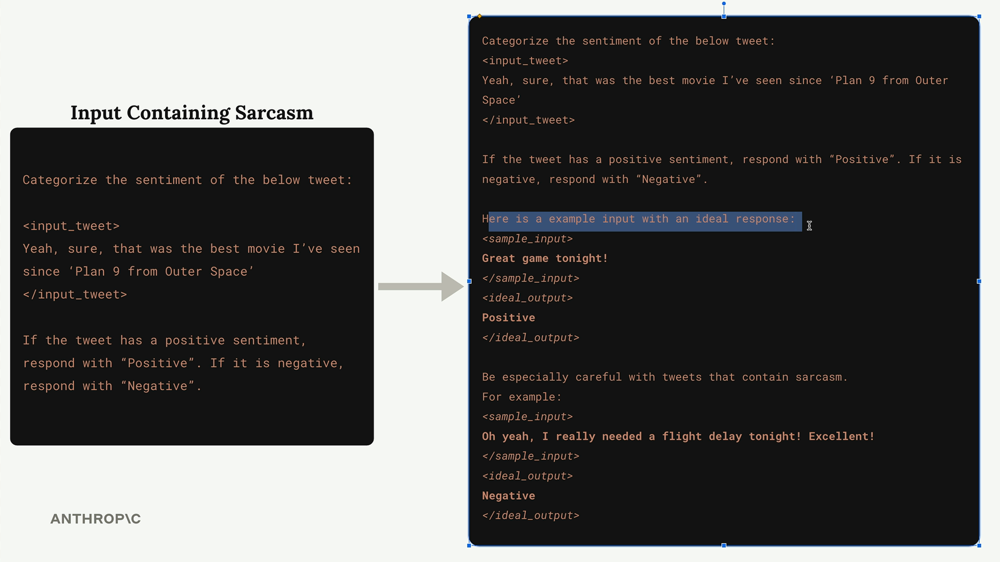
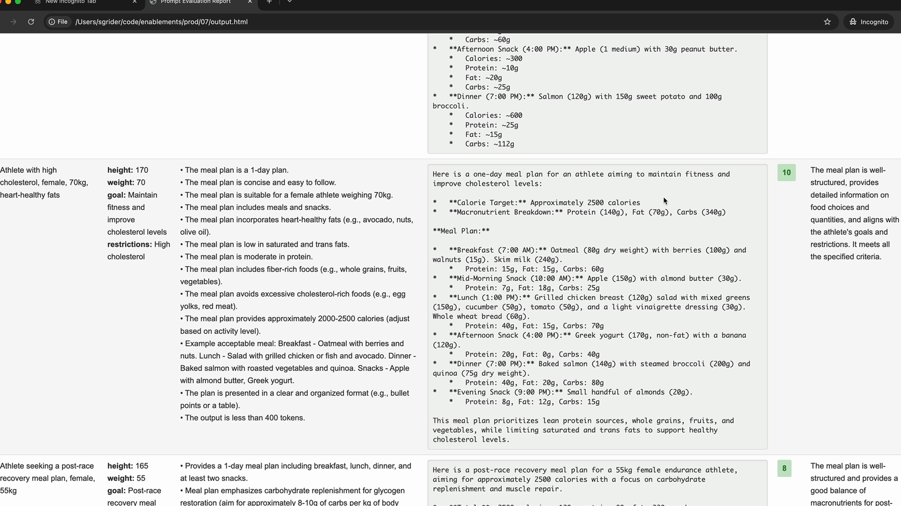

예시 제공하기
프롬프트에 예시를 제공하는 것은 여러분이 활용할 가장 효과적인 프롬프트 엔지니어링 기법 중 하나입니다. "원샷(one-shot)" 또는 "멀티샷(multi-shot)" 프롬프팅이라고 불리는 이 접근법은 Claude가 응답을 생성할 때 참고할 수 있도록 샘플 입력/출력 쌍을 제공하는 방식입니다.
예시의 작동 방식
감정 분석 예시를 살펴보겠습니다. 트윗이 긍정적인지 부정적인지 분류하도록 Claude에게 요청한다고 가정해 봅시다:

여기서 어려운 점은 풍자(sarcasm)입니다. "그래, 물론이지, '우주의 9호 행성'을 본 이후로 가장 좋은 영화였어"와 같은 트윗은 표면적으로는 긍정적으로 보이지만, 실제로는 비꼬는 말투이며 부정적인 의미입니다(Plan 9은 역대 최악의 영화 중 하나로 유명합니다).
예외 상황 처리를 위한 예시 추가
이 문제를 해결하기 위해, Claude에게 까다로운 경우를 처리하는 방법을 보여주는 예시를 추가할 수 있습니다:

개선된 프롬프트에는 다음이 포함됩니다:
- 명확한 긍정 예시: "Great game tonight!" → "Positive"
- 풍자적 예시: "Oh yeah, I really needed a flight delay tonight! Excellent!" → "Negative"
- 풍자를 신중하게 처리해야 하는 이유를 설명하는 맥락
예시가 <sample_input> 및 <ideal_output> 과 같은 XML 태그로 감싸져 있는 것을 확인하세요. 이 구조는 각 부분이 무엇을 나타내는지 Claude에게 명확하게 전달합니다.
예시를 사용해야 할 때
예시는 다음과 같은 경우에 특히 유용합니다:
- 예외 상황이나 경계 시나리오 처리
- 복잡한 출력 형식 정의 (특정 JSON 구조 등)
- 원하는 정확한 스타일이나 톤 제시
- 모호한 입력 처리 방법 시연
원샷 vs 멀티샷
원샷(One-Shot) : 패턴을 정립하기 위해 단일 예시 제공
멀티샷(Multi-Shot) : 다양한 시나리오를 다루기 위해 여러 예시 제공
다양한 예외 상황을 처리해야 하거나 유효한 응답의 다양한 유형을 보여주고 싶을 때 멀티샷을 사용하세요.
평가에서 좋은 예시 찾기
프롬프트 평가를 실행할 때, 예시로 활용할 가장 높은 점수의 출력물을 찾아보세요:

10점(또는 사용 가능한 최고 점수)을 받은 응답을 찾아 해당 입력/출력 쌍을 프롬프트의 예시로 활용하세요. 이렇게 하면 Claude가 여러분의 특정 사용 사례에서 "완벽한" 출력이 어떤 것인지 이해하는 데 도움이 됩니다.
예시에 맥락 추가하기
입력/출력 쌍만 제공하지 말고, 해당 출력이 좋은 이유를 설명하세요:
<ideal_output>
[Your example output here]
</ideal_output>
This example is well-structured, provides detailed information
on food choices and quantities, and aligns with the athlete's
goals and restrictions.이러한 추가적인 맥락은 Claude가 형식뿐만 아니라 좋은 응답의 이면에 있는 논리를 이해하는 데 도움을 줍니다.
모범 사례
- 항상 XML 태그를 사용하여 예시를 명확하게 구조화하세요
- 무엇을 보여주는지 명시적으로 표현하세요: "여기 이상적인 응답을 가진 예시 입력이 있습니다"
- 가장 흔한 실패 사례를 다루는 예시를 포함하세요
- 예시 출력이 이상적으로 여겨지는 이유를 설명하세요
- 예시를 특정 작업과 관련성 있게 유지하세요
예시는 말로 설명하는 대신 직접 보여주기 때문에 특히 강력합니다. 원하는 것을 말로 정확하게 묘사하려는 대신, 직접 시연합니다. 이를 통해 프롬프트가 훨씬 더 신뢰할 수 있게 되고, 지시사항만으로는 표현하기 어려운 미묘한 요구사항을 Claude가 이해하는 데 도움이 됩니다.